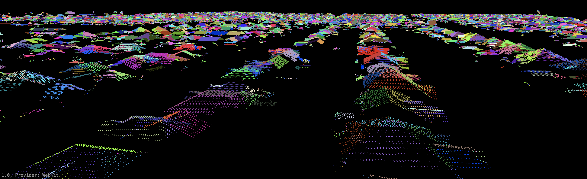

Publications
* Denotes student co-author.
Articles in Peer Reviewed Journals
- Asgari, M., Yang, W., Lindsay, J., Shao, H., Liu, Y., Miranda, R.D.Q. and Dehnavi, M.M., 2023. Development of a knowledge-sharing parallel computing approach for calibrating distributed watershed hydrologic models. Environmental Modelling & Software, 164, p.105708.
- Alijani, Z., Meloche, J., McLaren, A., Lindsay, J., Roy, A., Berg, A. 2023. A comparison of three surface roughness characterization techniques: photogrammetry, pin profiler, and smartphone-based LiDAR. International Journal of Digital Earth 15: 1, 2422-2439. DOI: 10.1080/17538947.2022.2160842.
- Newman*, D.R., Saurette, D.D., Cockburn, J.M.H., Drǎguţ, L., Lindsay, J.B. 2023. Assessing spatially heterogeneous scale representation with applied digital soil mapping Environmental Modelling & Software, 160, 105612 13 pp. DOI: 10.1016/j.envsoft.2022.105612.
- Newman*, D.R., Cockburn, J.M.H., Drǎguţ, L., Lindsay, J.B. 2022. Local scale optimization of geomorphometric land surface parameters using scale-standardized Gaussian scale-space Computers and Geosciences, 165, 105144 15 pp. DOI: 10.1016/j.cageo.2022.105144.
- Asgari*, M, Yang, W, Lindsay, J, Tolson, B, Dehnavi, MM. 2022. A review of parallel computing applications in calibrating watershed hydrologic models. Environmental Modeling and Software, 151 (2022) 105370 15 pp. DOI: 10.1016/j.envsoft.2022.105370
- Newman*, D.R., Cockburn, J.M.H., Drǎguţ, L., Lindsay, J.B. 2022. Evaluating Scaling Frameworks for Multiscale Geomorphometric Analysis. Geomatics, 2, 36-51. https://doi.org/10.3390/geomatics2010003.
- Eyre*, R, Lindsay, JB, Laamrani, L, Berg, A. 2021. Within-field yield prediction in cereal crops using LiDAR-derived topographic attributes with geographically weighted regression models. Remote Sensing, 13(20), 4152; https://doi.org/10.3390/rs13204152.
- Van Nieuwenhuizen*, N, Lindsay, JB, DeVries, B. 2021. Smoothing of digital elevation models and the alteration of overland flow path length distributions. Hydrological Processes, 35(7), e14271, DOI: 10.1002/hyp.14271.
- Alijani*, Z, Lindsay, JB, Chabot, M, Rowlandson, T, and Berg, A 2021. Sensitivity of C-band SAR polarimetric variables to the directionality of surface roughness parameters. Remote Sensing. 13(11), 2210; https://doi.org/10.3390/rs13112210
- Van Nieuwenhuizen*, N, Lindsay, JB, DeVries, B. 2021. Automated mapping of transportation embankments in fine-resolution LiDAR DEMs. Remote Sensing. 13(7), 1308; https://doi.org/10.3390/rs13071308
- Lindsay, JB, Yang, W, Hornby, DD. 2019. Drainage network analysis and structuring of topologically noisy vector stream data. ISPRS International Journal of Geo-Information. 8(9), 422; DOI: 10.3390/ijgi8090422
- Lindsay JB, Francioni* A, Cockburn JMH. 2019. LiDAR DEM smoothing and the preservation of drainage features. Remote Sensing, 11(16), 1926; DOI: 10.3390/rs11161926.
- Roberts* KC, Lindsay JB, Berg AA. 2019. An analysis of ground-point classifiers for terrestrial LiDAR. Remote Sensing, 11(16), 1915; DOI: 10.3390/rs11161915.
- Lindsay JB, Newman* DR, Francioni* A. 2019. Scale-optimized surface roughness for topographic analysis. Geosciences, 9(7) 322. DOI: 10.3390/geosciences9070322.
- Newman* D, Lindsay JB, Cockburn JMH. 2018. Measuring hyperscale topographic anisotropy as a continuous landscape property. Geosciences, 8(8) 1-14. DOI: 10.3390/geosciences8080278.
- Liu Y, Yang W, Shao H, Yu Z, Lindsay JB. 2018. Development of an integrated modelling system for evaluating water quantity and quality effects of individual wetlands in an agricultural watershed. Water, 10(6). DOI: 10.3390/w10060774.
- Newman* DR, Lindsay JB, Cockburn JM. 2018. Evaluating metrics of local topographic position for multiscale geomorphometric analysis. Geomorphology, 312(1): 40-50. DOI: 10.1016/j.geomorph.2018.04.003.
- Chabot* M, Lindsay J, Berg A, Rowlandson T. 2018. Comparing the use of terrestrial LiDAR scanners and pin profilers for deriving agricultural roughness statistics. Canadian Journal of Remote Sensing, 44(2). DOI: 10.1080/07038992.2018.1461559. (winner of the CJRS 2018 Best Paper Award)
- Shao H, Yang W, Lindsay J, Liu Y, Yu Z, Oginskyy A. 2017. An open source GIS-based decision support system for watershed evaluation of best management practices. Journal of the American Water Resources Association, 53(3): 521–531. DOI: 10.1111/1752-1688.12521
- Fuss* CE, Berg AA, Lindsay JB. 2016. DEM fusion using a modified k-means clustering algorithm. The International Journal of Digital Earth, 9(12): 1242-1255. DOI: 10.1080/17538947.2016.1208685
Book Chapters
- Lindsay J, Rothwell J. 2008. Modelling channelling and deflection of wind by topography. In Advances in Digital Terrain Analysis, Zhou Q, Lees B, and Tang G (eds). Springer: Berlin, Heidelberg; 383–405.
- Lindsay JB. 2008. Geomorphometry in TAS GIS. In Geomorphometry: Concepts, software, applications, Hengl T and Reuter H (eds). Elsevier: Amsterdam; 367–386.
Selected Conference Presentations
- Lindsay JB 2023. The case for locally scale optimized land-surface parameters. Geomorphometry 2023, Iasi, Romania; July 10-14. (Keynote Presentation) Download Presentation Slides
- Lindsay JB 2023. (Extended abstract) The time-in-daylight land-surface parameter. Geomorphometry 2023, Iasi, Romania; July 10-14. DOI: 10.5281/zenodo.7879601 (Winner of Best Paper)
- Lindsay JB 2020. (Extended abstract accepted but conference postponed until 2021 due to covid-19) Pit-centric depression removal methods. Geomorphometry 2020, Perugia, Italy; June 22-26, 2020 (postponed to summer 2021). DOI: 10.30437/GEOMORPHOMETRY2020_4
- Lindsay JB, Van Nieuwenhuizen* N. 2020. Road embankments in LiDAR DEMs. American Water Resources Association (AWRA) 2020 Geospatial Water Technology Conference, Austin, TX, USA; March 23-26 (Rescheduled to virtual conference due to Covid-19, August 4-13, 2020).
- Lindsay JB, Newman* DR. 2018. Hyper-scale analysis of surface roughness. Geomorphometry 2018: 5th International Conference of the ISG, Boulder, Colorado, USA; Aug. 13-17. slides
- Newman* D, Lindsay JB, Cockburn JMH. 2017. Evaluating the performance of local topographic position metrics for multiscale applications. CAGOnt, Kingston, Canada; Oct. 20-21.
- Lindsay J, Yang W, Hornby DD. 2017. Drainage network analysis of topologically noisy vector stream data using a priority-flood algorithm. Canadian Geophysical Union National Meeting, Vancouver, Canada; May 28-31.
- Lindsay J, Cockburn J, Bhamjee* R, Tweedie* J, Roberts* R. 2017. Evaluating low-flow conditions from channel characteristics and water level. Canadian Geophysical Union National Meeting, Vancouver, Canada; May 28-31.
Maps
- Lindsay, JB. 2015. Multi-scale topographic positions of North America. Presented at the 27th International Cartographic Association (ICA) Conference, August 23-28, 2015 Rio de Janeiro, Brazil.
{kind=link}
Other Works
- Wilford J, Basak S, Lindsay J. 2020. Multiscale topographic position image of the Australian continent. Exploring the Future, a publication of the Australian Government, Geoscience Australia.
- Lindsay JB. 2018. WhiteboxTools User Manual. DOI: 10.13140/RG.2.2.22964.96648 (available with WhiteboxTools download).
- Lindsay JB. 2018. A new method for the removal of off-terrain objects from LiDAR-derived raster surface models. DOI: 10.13140/RG.2.2.21226.62401
Don't see a downloadable copy of an article you're
interested in?
Please contact Prof. John Lindsay (jlindsay@uoguelph.ca) for PDF's of older research articles. Prof. Lindsay is also on ResearchGate.

Please contact Prof. John Lindsay (jlindsay@uoguelph.ca) for PDF's of older research articles. Prof. Lindsay is also on ResearchGate.